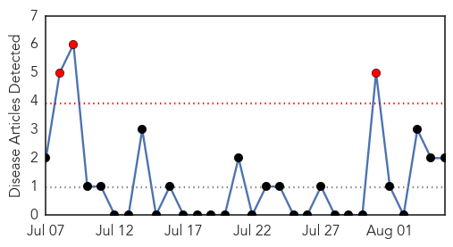
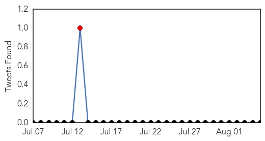
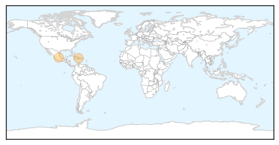
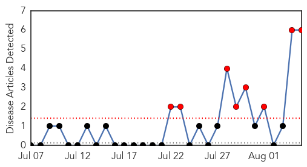

Chikungunya
30-Day Web Trend
3 alerts, 0 warnings

30-Day Twitter Trend
1 alerts, 0 warnings

Article Locations
Article Confidences

Top Articles:
Top Tweets:
-
No tweets found for Aug 05, 2015
Mumps
30-Day Web Trend
8 alerts, 0 warnings

30-Day Twitter Trend
0 alerts, 0 warnings

Article Locations

Article Confidences

Top Articles:
- 0.997
- Health officials: Mumps booster shot recommended for U of I students after outbreak
- 0.989
- Ninth mumps case confirmed among MU students - Columbia Daily Tribune
- 0.985
- Mumps cases continue to spread in Illinois
- 0.981
- Illinois Department of Health Sees Growing Numbers of Mumps Cases at U of I Campus
- 0.974
- Health department calls for mumps re-immunization after U of I outbreak
- 0.901
- UI students encouraged to get MMR boosters
Top Tweets:
-
No tweets found for Aug 05, 2015